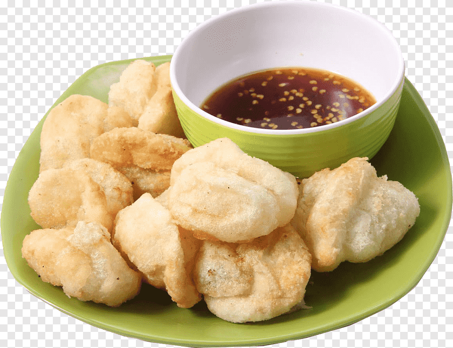

Cireng is makanan the best
Pecinta cireng
nama:Fajar Wildan
Sekolah: SMPN 1 Cipatat
PENJELASAN
Cireng adalah singkatan dari aci digoreng, yang dalam bahasa Sunda berarti "tepung kanji goreng". Makanan ini merupakan camilan khas Sunda yang terbuat dari adonan tepung tapioka yang digoreng hingga renyah.
Cireng menjadi populer di Jawa Barat, terutama di daerah Priangan, dan dikenal dengan teksturnya yang kenyal di dalam dan renyah di luar. Makanan ini seringkali dijual dalam berbagai bentuk dan variasi rasa, bahkan ada juga yang menjual cireng isi.
Cireng biasanya dinikmati dengan cara dicocol ke dalam bumbu yang khas, seperti bumbu rujak atau bumbu kacang. Meskipun terbuat dari bahan sederhana, cireng memiliki rasa yang gurih dan menjadi camilan favorit banyak orang.
Secara singkat, ciri khas cireng adalah:
Bahan utama: Tepung tapioka atau aci
Cara memasak: Digoreng
Tekstur: Kenyal di dalam dan renyah di luar
Rasa: Gurih
Asal: Sunda
Penyajian: Biasanya dicocol bumbu
.
.
.
Sosok Fajar W.